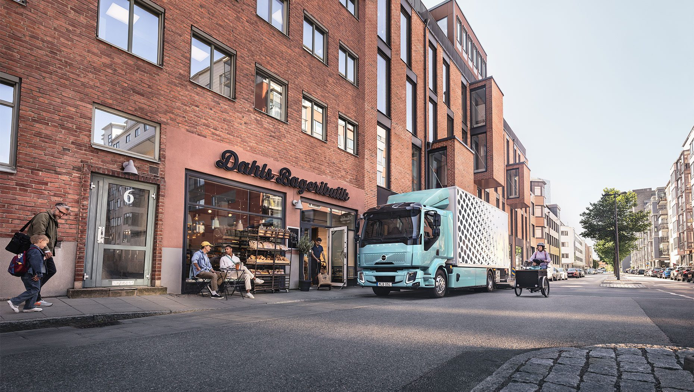

Swift and versatile. The Volvo FL is the ultimate tool for city distribution, municipal works, or emergency response.
It delivers the signature Volvo experience in a nimble, space-saving design. Whether you go fully electric or choose diesel power,
it's a high-performance partner built for the street. It's time to perform.

Volvo FL
Applications: Delivery transportation, urban construction, rescue and recovery.
Master the city with a cockpit designed for clarity, featuring slim-line mirrors and expansive windows.
Beyond the glass, advanced assistance systems go above European safety mandates to shield pedestrians and support every driver's mission.
Safety from every angle.
Power options
Select the energy that fuels your success. Our diesel lineup offers the flexibility of all-wheel drive and a spectrum of power ranging from 210 to 320 hp.
From the tight corners of city logistics to the demanding terrain of emergency response, the Volvo FL is a modular masterpiece tailored to your exact needs.
Engineered for every environment.
Just Drive
Redefine the diesel experience with our latest 8-speed automatic gearbox. Designed for effortless operation, it matches the signature smoothness of the Volvo FL Electric while maximizing fuel economy.
With a suite of drive mode packages at your fingertips, you can instantly calibrate your powertrain for rapid deliveries or high-stakes emergency response.
Efficiency in every shift.
Designed for the challenge
Where style serves safety. The Volvo FL's distinctive LED lighting and massive greenhouse area eliminate blind spots in crowded environments.
Offering a versatile lineup of three cab configurations, it caters to the unique demands of every operator while setting the standard for urban security.
Three cabs, one vision: total control.
Working around the truck
The right level
The Volvo FL is a master of transitions. Spanning from 10 to 19 tonnes, the lighter models are optimized for rapid urban access, while the heavier versions offer tailored wheel configurations for maximum stability.
Every model benefits from advanced air suspension, allowing you to calibrate the chassis height with surgical precision for any loading task.
Modular strength; agile performance.
Control around your truck
See the city through a smarter lens. We've combined world-class direct vision with advanced radar-backed systems to create an uninterrupted safety perimeter.
Whether it's monitoring blind spots with our side cameras or detecting obstacles with active collision support, the Volvo FL ensures you always know exactly where your team and the public are.
Total clarity. No compromises.
Access to power
Fuel your tools with zero compromises. Whether you embrace the silent surge of Electric or the proven grit of Diesel,
our robust Power Take-Off (PTO) solutions are ready to drive your pumps, tippers, or compactors.
No matter the mission, we provide the energy to power the tools that get your job done. Your equipment, fully energized.